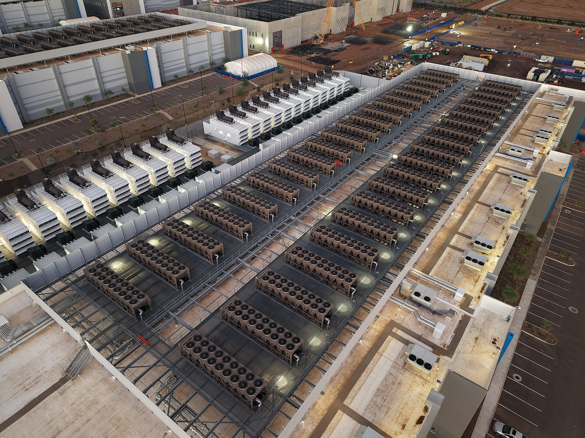

04 — Homelab
Mon labo perso.
Pour m'entraîner à attaquer… et surtout à détecter.
 En construction
En construction
Le matériel
Petit budget, vraie infrastructure.
[Décris ton matériel, ton hyperviseur et pourquoi tu as choisi cette architecture.]
Architecture
Internet
│
┌────┴─────┐
│ pfSense │ pare-feu / VLANs
└─┬──────┬─┘
│ │
[LAN] [LAB isolé]
│ ├── Kali (attaquant)
│ ├── Metasploitable
│ ├── Windows Server (AD)
│ └── Wazuh (SIEM)
└── poste perso
Avancement
50%
- Hyperviseur Proxmox installé
- Segmentation par VLANs
- Active Directory vulnérable
- Remontée des logs vers Wazuh